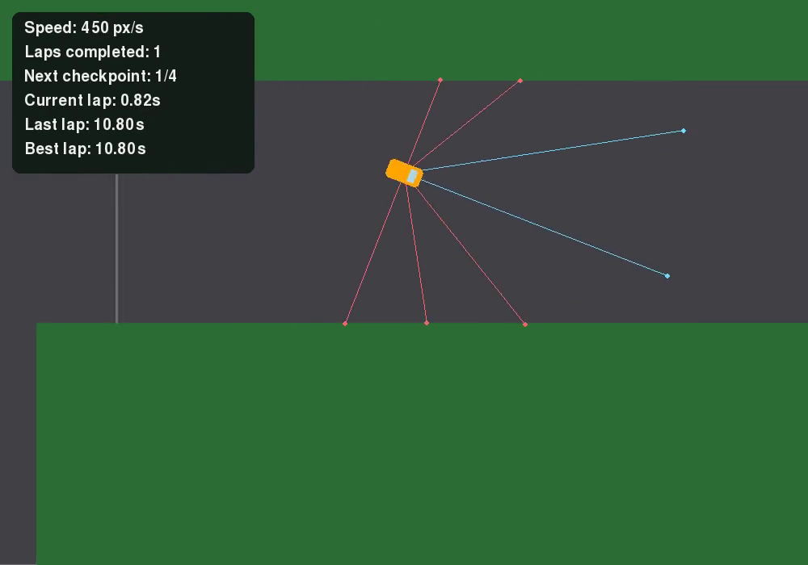

01 / AI RACERDESKTOP CAPTURE

PLAYABLE DESKTOP BUILD / ONGOING UPDATES
AI Racer.
A 2D racing experiment where neural-network drivers learn a circuit through selection and mutation.
Manual driving, saved-champion AI and live evolutionary training. The supplied source passes all ten original tests locally.
Watch the desktop demo
15-second silent capture of the original saved-champion AI mode. Not a browser port.
Runs locally with Python and Pygame CE; download includes setup instructions. A public GitHub repository has not been created, and GitHub Pages cannot run this desktop application directly.